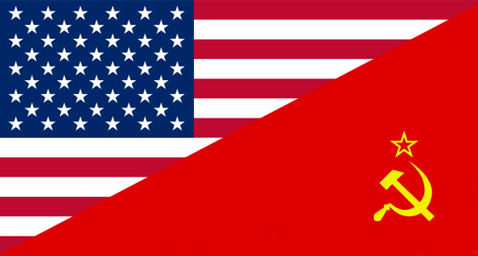
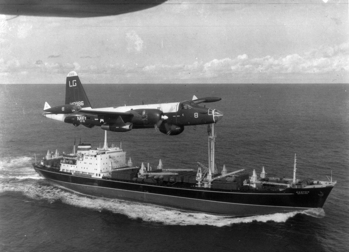

The Cold War was a time of tension between the United States and the Soviet Union (and their allies). It grew out of post-war tensions and dominated the international world for over 35 years. During this time, there were many major events such as the Cuban Missile Crisis, the Korean War, the Vietnam War, and the Berlin Wall, in addition to the widespread nuclear proliferation.
The Cold War reached its pinnacle between 1948 and 1953 during which the Soviet Union blockaded West Berlin and the Western Allies formed NATO. After the Soviet Union exploded their first atomic weapon, tensions rose because that meant that the United States no longer held a monopoly of nuclear weapons. Although tensions sizzled down after Joseph Stalin’s death in 1953, the stalemate continued.
In 1962, there was a confrontation between the United States and the Soviet Union that brought the two parties to the brink of war over the existence of nuclear missiles in Cuba. After deliberation, Khrushchev and Kennedy came to the agreement that if the United States removed the missiles that they had previously placed in Turkey, the Soviet Union would halt the construction on the missile sites. After a few weeks, both sides began compromising, and the crisis finally ended in November. This crisis was the closest the world had ever gotten to a global nuclear war.
